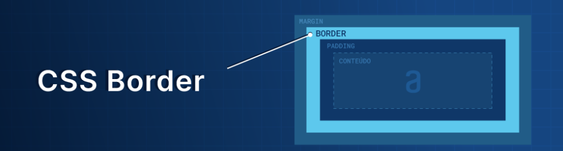
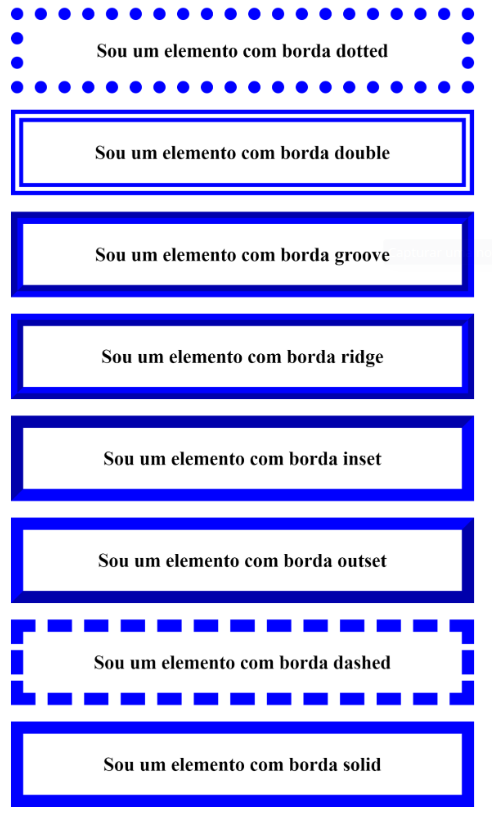

Exemplos aplicados de CSS
fontes na pagina
@import url('https://fonts.googleapis.com/css2?family=Barriecito&family=Indie+Flower&family=Tilt+Prism&display=swap');
no css imporamos a fonte e aplicamos
Exemplo:
@import url('https://fonts.googleapis.com/css2? family= Barriecito & display=swap');
font-family=== Barriecito,cursive
Barriecito é o nome da fonte
é uma fonte cursiva
mudar cor de fundo
basta que no CSS seja arquivo ou codigo interno vc coloque -/ background-color: /- seguido da cor desejada
exemplo
background-color:red;
agora o fundo vai ficar vermelho
seja fundo da pagina, cabeçario,titulos, paragrafos entre outros
peso da fonte (negrito)
font-weight deixa a fonte mais leve ou pesada (negrito)
font-weight:800;
o tamanho vai de 100 a 900 onde 100 sendo a fonte é mais leve e o 900 com font pesada ao maximo
Estilos de borda padrão da tag border-style

border: 30px solid blue
O código acima é uma forma abreviada de escrever os mesmos valores abaixo:
border-width: 30px; // Estiliza a sua largura
border-style: solid; // Estiliza seu estilo
border-color: blue; // Estiliza sua cor

É possível que um elemento tenha borda em apenas um de seus lados
Com a tag border-top é possivel colocar borda apenas na parte desuperior (cima)
Para cada lado do elemento HTML, temos uma propriedade específica. Confira a seguir quais são:
border-top: Aplica borda na parte superior de um elemento.
border-left: Aplica borda no lado esquerdo de um elemento.
border-right: Aplica borda no lado direito de um elemento.
border-bottom: Aplica borda na parte inferior de um elemento.